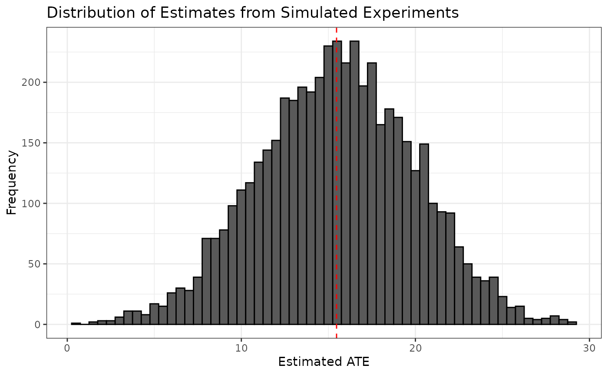

Confidence Intervals
confidence_intervals.Rmd
library(designrbi)This article demonstrates how to use the package to construct confidence intervals for an average treatment effect (ATE) estimate using a simulation-based approach. We will use data from an anchoring experiment where participants were randomly assigned to either a control or treatment group, and we will calculate the ATE, simulate experiments under the null hypothesis, and construct a confidence interval.
The complete pipeline to compute a 95% confidence interval for the ATE estimate is as follows:
anchor |>
experiment_to_schedule(treatment = d, response = y) |>
impute_unobserved(tau = ate_hat) |>
sim_experiment(reps = 5000) |>
group_by(replicate) |>
summarize(ate_hat = diff_in_means(y, d)) |>
quantile(probs = c(0.025, 0.975))This article will walk through each step of this pipeline in detail, starting with understanding the experimental data, then imputing a schedule of potential outcomes, simulating new experiments, and finally calculating the confidence interval.
Understanding the experimental data
Start by loading the necessary libraries and the data.
library(dplyr)
library(ggplot2)
library(readr)
anchor <- read_csv("https://stat158.berkeley.edu/spring-2026/data/anchoring/anchoring.csv") |>
mutate(d = factor(X),
y = Y) |>
select(d, y)
anchor
#> # A tibble: 74 × 2
#> d y
#> <fct> <dbl>
#> 1 11 16
#> 2 11 5
#> 3 73 20
#> 4 73 40
#> 5 11 73
#> 6 73 70
#> 7 11 6.5
#> 8 73 12
#> 9 11 15
#> 10 11 70
#> # ℹ 64 more rowsNote the structure of experimental data: each row corresponds to a single unit (participant) and contains the treatment assignment () and the observed response ().
In this experiment, the estimand of interest is the average treatment effect (ATE), which can be estimated using the difference in means between the treatment and control groups. We can write such a function to operate on the response and treatment vectors and use it to calculate the observed ATE estimate.
Impute a schedule of potential outcomes
A RBI confidence interval seeks to quantify the variability that was induced by the random assignment that occurred at the outset of the experiment. To do this, we first need to impute the unobserved potential outcomes for each unit in the experiment. Let’s start by creating a schedule of the observed potential outcomes.
schedule <- anchor |>
experiment_to_schedule(treatment = d, response = y)
schedule
#> # A tibble: 74 × 4
#> d y Y11 Y73
#> <fct> <dbl> <dbl> <dbl>
#> 1 11 16 16 NA
#> 2 11 5 5 NA
#> 3 73 20 NA 20
#> 4 73 40 NA 40
#> 5 11 73 73 NA
#> 6 73 70 NA 70
#> 7 11 6.5 6.5 NA
#> 8 73 12 NA 12
#> 9 11 15 15 NA
#> 10 11 70 70 NA
#> # ℹ 64 more rowsNote that the schedule contains the observed potential outcomes for each unit, but the unobserved potential outcomes are missing. We can use the observed ATE estimate to impute the unobserved potential outcomes by assuming that the treatment effect is constant across all units.
imputed_schedule <- impute_unobserved(schedule, tau = ate_hat)
imputed_schedule
#> # A tibble: 74 × 4
#> d y Y11 Y73
#> <fct> <dbl> <dbl> <dbl>
#> 1 11 16 16 31.5
#> 2 11 5 5 20.5
#> 3 73 20 4.53 20
#> 4 73 40 24.5 40
#> 5 11 73 73 88.5
#> 6 73 70 54.5 70
#> 7 11 6.5 6.5 22.0
#> 8 73 12 -3.47 12
#> 9 11 15 15 30.5
#> 10 11 70 70 85.5
#> # ℹ 64 more rowsWhile this is likely not the true schedule of potential outcomes, it is a useful tool for simulating the random assignment process and understanding the variability of our ATE estimate.
Simulate a single experiment
Now that we have a schedule of potential outcomes, we can simulate the random assignment process to generate new datasets that could have been observed under the same experimental design. Let’s start by simulating a single experiment.
set.seed(402) # for reproducibility
sim1 <- imputed_schedule |>
sim_experiment(reps = 1)
sim1
#> # A tibble: 74 × 3
#> replicate d y
#> <int> <fct> <dbl>
#> 1 1 73 31.5
#> 2 1 11 5
#> 3 1 73 20
#> 4 1 11 24.5
#> 5 1 73 88.5
#> 6 1 73 70
#> 7 1 11 6.5
#> 8 1 11 -3.47
#> 9 1 73 30.5
#> 10 1 11 70
#> # ℹ 64 more rowsWe can compare this to the original data set:
anchor
#> # A tibble: 74 × 2
#> d y
#> <fct> <dbl>
#> 1 11 16
#> 2 11 5
#> 3 73 20
#> 4 73 40
#> 5 11 73
#> 6 73 70
#> 7 11 6.5
#> 8 73 12
#> 9 11 15
#> 10 11 70
#> # ℹ 64 more rowsThe units are the same across both data sets, but the treatment
assignments and observed responses may differ due to the random
assignment process. The first unit, for example was assigned to
73 simulated experiment, so we observed
:
31.5. In the original data, the first unit was assigned to
11 and we observed
:
16. The second unit, was assigned to 11 in both the
original experiment and the simulated experiment, so we observed
:
5 in both cases.
We can calculate the ATE estimate for this simulated experiment.
ate_hat_sim1 <- sim1 |>
summarize(ate_hat = diff_in_means(y, d))
ate_hat_sim1
#> # A tibble: 1 × 1
#> ate_hat
#> <dbl>
#> 1 17.3This serves as a proof of concept that we can simulate new experiments and calculate new ATE estimates under the same experimental design. However, a single simulated experiment is not enough to understand the variability of our ATE estimate. We need to simulate many experiments to get a distribution of ATE estimates.
Simulating many experiments
Let’s use the same approach but simulate 5000 experiments.
sim5000 <- imputed_schedule |>
sim_experiment(reps = 5000)
head(sim5000)
#> # A tibble: 6 × 3
#> replicate d y
#> <int> <fct> <dbl>
#> 1 1 11 16
#> 2 1 73 20.5
#> 3 1 11 4.53
#> 4 1 73 40
#> 5 1 11 73
#> 6 1 73 70
tail(sim5000)
#> # A tibble: 6 × 3
#> replicate d y
#> <int> <fct> <dbl>
#> 1 5000 73 60
#> 2 5000 73 32
#> 3 5000 11 25
#> 4 5000 73 60
#> 5 5000 11 26.7
#> 6 5000 11 28sim_experiment() returns the 5000 simulated experiments
as a single tall data frame, each one stacked on top of one another,
with a new variable called replicate that indicates which
rows belong to which simulated experiment. We can use this variable to
group the data and calculate the ATE estimate for each simulated
experiment.
sim5000_estimates <- sim5000 |>
group_by(replicate) |>
summarize(ate_hat = diff_in_means(y, d))
sim5000_estimates
#> # A tibble: 5,000 × 2
#> replicate ate_hat
#> <int> <dbl>
#> 1 1 13.3
#> 2 2 21.5
#> 3 3 20.9
#> 4 4 19.8
#> 5 5 14.2
#> 6 6 16.7
#> 7 7 13.6
#> 8 8 13.9
#> 9 9 19.3
#> 10 10 16.9
#> # ℹ 4,990 more rowsWe can visualize the distribution of ATE estimates from the simulated experiments and see that it is centered around the observed ATE estimate from the original experiment.
ggplot(sim5000_estimates, aes(x = ate_hat)) +
geom_histogram(binwidth = 0.5, color = "black") +
geom_vline(xintercept = ate_hat, color = "red", linetype = "dashed") +
labs(title = "Distribution of Estimates from Simulated Experiments",
x = "Estimated ATE",
y = "Frequency") +
theme_bw()